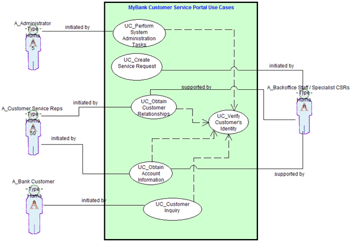

The following example represents a simplified subset of information normally contained in a use case model. Use case
descriptions depict simplified primary scenarios. For more complete information on representation, refer to the
Team Solution Design guideline associated with this artifact.
|
Use case
|
UC-01_Obtain Customer Relationships
|
|
Business event
|
A telephone call is received by the CSR via the Interactive Voice Recognition system from a Gold
customer of the bank requesting information regarding one their relationships. Actor(s)Customer service
representative (CSR
|
|
Actor(s)
|
A_Customer Service Reps
|
|
Description (Use case overview)
|
Create a new, open order for a registered customer of the home shopping ordering system. The order is
initially empty although the contents of previous orders may subsequently be added to it to provide a
"re-ordering" service.
|
|
Preconditions
|
1. Customer is valid (has at least one relationship) and knows their account number 2. Account number
is correct and account exists within the system
|
|
Successful outcome
|
Valid actions for each
|
|
Failure outcomes
|
Preconditions not met
|
|
Main scenario (flow of events) (in the e-business reference architecture examples, this
is referred to as description of termination outcome)
|
1. Use case starts when CSR is passed a call from the IVR with the account data filled in.
2. System displays account data and displays basic customer information including authentication data
and requests authentication.
3. CSR authenticates customer and selects Authenticated button.
4. System enables actions for originally specified relationships.
|
Although not typically required in a pre-sale environment, the following use case view may be helpful if
more than a few use cases are developed. The use case view portrays the association between actors and use
cases, including whether the actor initiates or supports the use case. This view was created using the SA4TeamSD
configuration of IBM Rational System Architect.

Figure 1. Use Case View
|